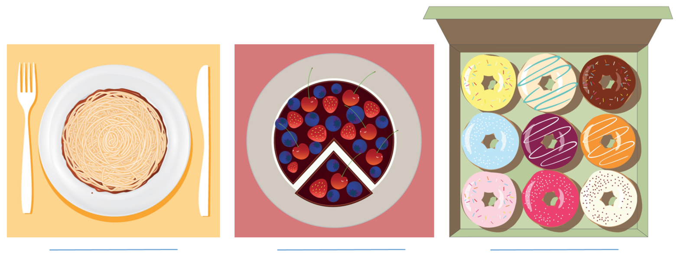
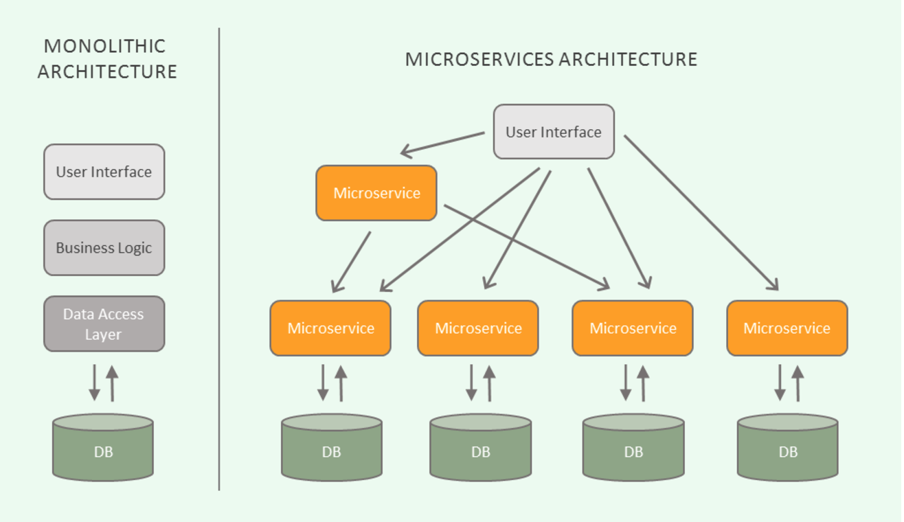
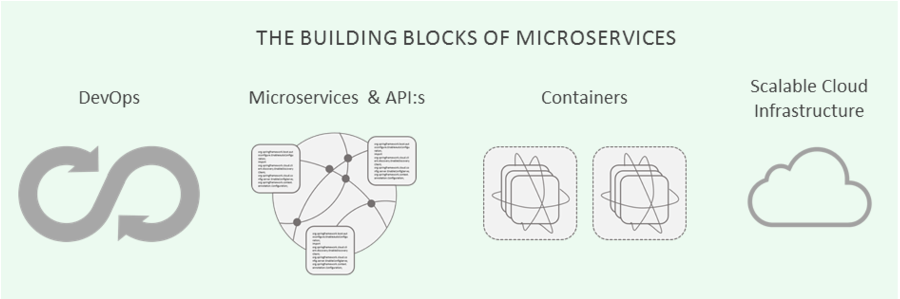

微服务到底意味着什么？它与以往的开发架构有何不同？
背景
最近几年，越来越多的开发人员使用“微服务”一词来阐述他们的系统或应用架构，当然或许这只是他们在吹嘘自己在技术潮流中并未落伍。我认为，IT科技行业的人士至少要了解微服务的基础知识，因为它代表着未来的发展方向。即使对我的话半信半疑，还有行业内很多大神为我背书。只是，话说回来，到底什么是微服务呢？
微服务架构

上图从左到右说明
左：单体架构下，应用紧耦合，所有的变更必须一起上线，持续部署就是天方夜谭。中：传统SOA架构允许单独的变更，但是每一个部分必须很谨慎地修改以免破坏整体架构设计。右：在微服务架构下，开发可以独立地创建、维护和改进服务。服务之间通过API连接。
首先，确切地说，当谈到微服务时，我们实际上是指微服务架构。这是一种独特的架构设计模式，它将是软件、web或移动应用拆分为一系列独立的服务——如微服务。这些服务仅用于某一个特定的业务功能，例如：用户管理、用户角色、电子商务购物车、搜索引擎、社交媒体登录等。此外，它们是相互独立的，这意味着它们可以采用不同的编程语言和数据存储。微服务中几乎不存在集中管理，它使用轻量级的HTTP、REST或Thrift API来进行内部通信。
当然有些人会问：嘿，这和SOA有什么不一样？某种程度上，你可以说微服务首先实现了面向服务的架构目标。然而，两种架构之间仍然存在差异。通常，经典的SOA适用于部署一体化架构应用，并且更倾向于平台驱动，而微服务必须是可独立部署的，因此在各个维度上提供了更多的灵活性。当然，最主要的区别应该是规模的不同，“微观”——这个词一听就比常规的SOA要小得多。正如Martin Fowler所说，我们应该将SOA视为微服务的超集。

话虽如此，我们并不把微服务视为革命性的突破，它更像是软件开发进化史中自然而然地往前迈了一步。
微服务的优点
与物理世界（PC硬件、宜家家具、汽车等）中的模块化趋势类似，微服务的理念是允许开发人员基于各种独立组件来构建应用程序，这些组件可以轻松更改、删除或升级，而不会影响整个应用程序——这与一体化架构完全不同。这是这种新型架构的主要优点之一。除此之外，某些微服务（例如：文件上传服务）一次开发完成之后，开发人员可以在其他项目中重用该代码的功能。
微服务的另一个重要特征是，与单一应用程序不同的是——单一程序根据应用程序的不同层级来定义团队：用户界面团队，服务器端团队，数据库团队等——微服务允许公司围绕特定业务功能来构建团队。这反过来又驱使团队具备了跨职能能力，从而拥有了一系列更强大的技能：用户体验、数据库管理、项目管理等。这使我们进一步走进DevOps时代。
服务的分散管理使开发人员能够根据特定业务需求选用不同的编程语言，这取决于他们认为哪种语言才是围绕微服务构建的最佳选择。这也意味着他们可以使用独立的数据存储，从而获得这种架构的最大优势——几乎无限的可扩展性。在微服务多地部署完成后，您只需要调整所需的功能，而不是每次都创建整个应用程序的重复实例。这反过来又节省了时间和资源。

在谈到微服务时，不可避免地要提到容器。容器旨在减少运行时所需要的最小可行部件，而不是在同一物理或虚拟机中打包多个功能。话虽如此，容器只是可以优化部署的工具，所以在无容器化环境中，基于微服务架构构建应用程序也不是不可能的。
总结
总而言之，微服务的目标是通过将应用程序分解成较小的可组合的部分，以便在需要时可以独立部署、升级、删除或缩放，从而简化构建、维护和管理应用程序。